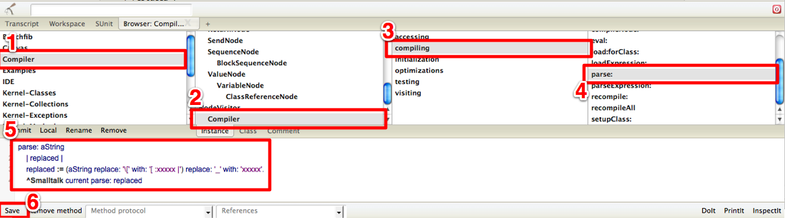

Scalaの素晴らしい機能のひとつである「プレースホルダー構文による部分適用」についてSmalltalkerにも分かりやすく説明します
この記事は Scala Advent Calendar 2011 の11日目の記事です。 この記事は、Scala入門と言っておきながら、 Scalaの細かい文法の説明はしません。 雰囲気だけ分かってもらえればと思います。
Scalaは関数型言語とJava的なオブジェクト指向を融合した新しいタイプの言語です。 Scalaは多くの関数型言語と同じようにカリー化された関数を定義することもできますが、 Javaと同じようなカリー化されていない形式もサポートしています。 カリー化された関数は1引数ずつ渡して、部分適用をすることができます。
// カリー化されている形式
def funcCurried(x: String)(y: Int) = x + ":" + y
val partial:Int => String = funcCurried("hoge") // 第１引数だけ渡す。partialはIntを受け取ってStringを返す関数になる
// カリー化されていない形式
def funcNotCurried(x: String, y: String) = x + ":" + y
val partail:Int => String = funcNotCurried("hoge") // コンパイルエラー(引数の数が合わない)
ScalaはJavaのライブラリにシームレスにアクセスすることができますが、
Javaのライブラリのメソッドは当然カリー化されていません。
Scalaの標準ライブラリも基本的にはカリー化されていない形式で記述されています。
カリー化されていないと部分適用ができず、
関数を組み合わせて使うことがやりずらくなります。
そこで、Scalaには簡単に部分適用するためのプレースホルダー構文があります。 まだ適用したくない引数には、アンダースコア(_)を置いておけば、 それ以外の引数を部分適用して、アンダースコアの部分を引数とする関数にしてくれます。 また、引数だけでなく、メソッドのレシーバにプレースホルダーを置くこともできます。
def funcNotCurried(x: String, y: Int, z: Boolean) = x + ":" + y + ":" + z
val partialFunc : Int => String = funcNotCurried("hoge", _, true) // 第2引数以外を部分適用
val partialFunc2 : String => String = funcNotCurried(_, 3, false) // 第1引数以外を部分適用
val partialFunc3 : (Int, Boolean) => String = funcNotCurried("fuga", _, _) // 第1引数だけを部分適用
// 上のプレースホルダーは、下記のように解釈される
val partialFunc : Int => String = { x => funcNotCurried("hoge", x, true) }
val partialFunc2 : String => String = { x => funcNotCurried(x, 3, false) }
val partialFunc3 : (Int, Boolean) => String = { (x, y) => funcNotCurried("fuga", x, y) }
// レシーバをプレースホルダーにする
val func1 : Char => Boolean = _.isDigit
// レシーバと引数を同時にプレースホルダーを置くことも可能
val func2 : (String, String) => String = _.mkString(_)
// 高階関数として渡す例 (結果は"123")
val onlyNumber = "a1b2c3" filter { _.isDigit }
次の例のonlyNumberの定義にはアンダースコアが２つ使われていますが、
2引数関数ではなく、1引数関数となっている点に注意してください。
// アンダースコアが２回出てくる例
val onlyNumber : String => String = _ filter { _.isDigit }
^^^^^^^^^^^ ←この関数をfilterメソッドに渡す
^^^^^^^^^^^^^^^^^^^^^^ ←この関数は1引数関数となる
// 上のプレースホルダーは、下記のように解釈される
val onlyNumber:String => String = { str => str filter { c => c.isDigit } }
2つめのアンダースコアはfilterメソッドへの高階関数として渡されるため、
一つ目のレシーバ部分のアンダースコアだけがonlyNumber関数の引数になります。
プレースホルダー構文がひとつの関数と見なされるルールは説明が難しいですが、
引数として渡した時や括弧で括った時などに一つの関数として評価されます。
具体例を見た方が分かりやすいと思います。下記の例のfunc3とfunc6は途中で関数と解釈されるため、
型が合わずコンパイルエラーになります。
val func1 : (String, String) => String = _.mkString(_)
val func2 : (String, String, String) => String = _.mkString(_).mkString(_)
val func3 : (String, String, String) => String = _.mkString(_.mkString(_)) // コンパイルエラー
^^^^^^^^^^^^^ ← 引数として渡した時点で、関数として評価される
val func4 : (Int, Int) => Int = _ + _ // _.+(_)と同じ意味
val func5 : (Int, Int) => Int = _ + _ * 2 // _.+(_).*(2)と同じ
val func6 : (Int, Int) => Int = (_ + _) * 2 // コンパイルエラー
^^^^^^^ ← 括弧内でひとつの関数として評価される
val func7 : (Int, Int) => Int = _.+(_).*(2) // このように書けばコンパイルは通る(しかし、読みにくい)
このように、プレースホルダー構文は複雑な式には使えません。
複雑な式になる場合は、引数を明示した無名関数を使うか、
もしくはきちんと名前をつけて関数を定義するべきでしょう。
早速、Smalltalkでプレースホルダー構文を実装してみましょう。 手元に手頃なSmalltalk環境がない人も心配は無用です。 このページを開いた時点で、Smalltalkは準備されています。 下のボタンをクリックしてください。
画面下部にSmalltalkのブラウザが開きましたね? これはAmber Smalltalk というJavascriptによるSmalltalk実装です。 これでどこでもSmalltalkを試すことができます。 (スマートフォンで見てる方がいらしたら、ごめんなさい)
では、実装に入りたいのですが、 プレースホルダー構文を実装するには、 Smalltalkの構文から変える必要があります。 Amber Smalltalkのパーサー部分はPEG.jsというパーサージェネレータが生成した Javascriptのコードになっています。 非常に残念ですが、Smalltalkで記述されていないので、 パーサー部分はダイナミックにいじることはできません。 しょうがないので、パースする前に文字列レベルでコードを書き換える方針にします。
では、Compilerクラスをいじりましょう。 "Compiler"パッケージ(1)の"Compiler"クラス(2)の"compiling"プロトコル(3)の"parse:"メソッド(4)を クリックしてください。  画面下部のエディタ部分(5)にparse:メソッドのコードが表示されます。 Smalltalkクラスのparseメソッドに委譲しているので、 その前にコードの書き換えをすればよさそうです。 下記のように書き換えましょう。 このメソッドの定義をミスると、今後パースができなくなりますので、気をつけてください。。 (ミスった人はページをリロードしてください。また一からやり直しです。)
parse: aString
| replaced |
replaced := (aString replace: '\[' with: '[ :xxxxx |') replace: '_' with: 'xxxxx'.
^Smalltalk current parse: replaced
コードを書き換えたら、左下の「Save」ボタン(6)をクリックしてください。
ブロック内にアンダースコアがあれば、プレースホルダーと見なすようにしました。
無条件に置換しただけのひどいコードですね。
もう引数つきのブロックは正しくパースできません。
文字列の中でアンダースコアを使うとxxxxxに置換されてしまいます。
その他不具合を言ったら枚挙に暇がない、いい加減なコードですが、それでも動いてしまうのがSmalltalkのすごいところです。
動作をを確認してみましょう。Workspaceタブ(1)をクリックしてください。
(1 to: 10) select: [ _ even ]偶数だけが表示されたでしょうか？逆に本来正しいSmalltalkのコードはパースエラーとなります。
(1 to: 10) select: [ :each | each even ]
F#のパイプライン演算子も導入すれば、下記のようなコードも書けます。 複数行のコードを実行する場合は、ドラッグでコードを選択して、PrintItをクリックしてください。 (パイプライン演算子の実装方法はこちらを参照)
(1 to: 10) |> [ _ select: [ _ even ] ] |> [ _ collect: [ _ * 3 ] ]最後に次のコードをWorkspaceで評価してください。(パイプライン演算子の実装も必要です) Workspace上で評価するコードを選択して、「DoIt」をクリックします。
'#conclusion' asJQuery
show;
|> [ _ offset top |> [ 'html,body' asJQuery animate: #{ #scrollTop -> _ } with: 'slow' ] ];
animate: #{#opacity -> 1} duration: 8000